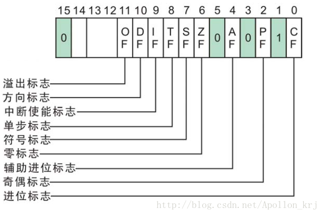
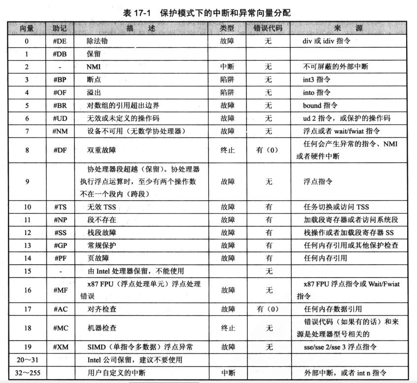

Orange's 一个操作系统实现 小知识点
一些小知识点
CPU发展
8086 16位 CPU => 80386 32位 CPU
实模式&保护模式
模式 进制数 地址总线宽度 寄存器及数据总线宽度 寻址空间 实模式 16 20 16 1MB 保护模式 32 32 32 4GB
段寄存器
32位段寄存器实际上由16位的段选择器和描述符高速缓存器组成。但描述符高速缓存器是不能直接访问的。
代码段和数据段的权限访问规则
类型 特权级 低->高 特权级 高->低 相同特权级之间 一致代码段 可 不可 可 非一致代码段 不可 不可 可 数据段（非一致） 不可 可 可 汇编语言里的一些寄存器的功能：
EAX 是”累加器”(accumulator), 它是很多加法乘法指令的缺省寄存器。
EBX 是”基地址”(base)寄存器, 在内存寻址时存放基地址。
ECX 是计数器(counter), 是重复(REP)前缀指令和LOOP指令的内定计数器。
EDX 则总是被用来放整数除法产生的余数。
ESI/EDI分别叫做”源/目标索引寄存器”(source/destination index),因为在很多字符串操作指令中, DS:ESI指向源串,而ES:EDI指向目标串。
EBP是”基址指针”(BASE POINTER), 它最经常被用作高级语言函数调用的”框架指针”(frame pointer)。
ESP 专门用作堆栈指针，被形象地称为栈顶指针，堆栈的顶部是地址小的区域，压入堆栈的数据越多，ESP也就越来越小。在32位平台上，ESP每次减少4字节。
寄存器EAX、AX、AH和AL之间的关系：
EAX 为32位。
AX为EAX低16位。
AH为AX高8位，AL为AX低8位。
dd、dw和db：
汇编语言中dd、dw和db分别代表4个字节、2个字节和1个字节。
汇编指令JC：
汇编指令，当进位标志CF=1，即有进位时，跳转。
标志位寄存器：

汇编指令cmp：
cmp指令格式: cmp 操作对象1, 操作对象2
计算（操作对象1 - 操作对象2），但不保存结果，只是根据结果修改相应的标志位。
汇编指令jne：
jne是汇编指令中的一个条件转移指令。当ZF=0，转至标号处执行。当ZF=1，顺序执行。
地址描述符结构ARDS：
Offset Name Description 0 BaseAddrLow 基地址的低32位 4 BaseAddrHigh 基地址的高32位 8 LengthLow 长度(字节)的低32位 12 LengthHigh 长度(字节)的高32位 16 Type 这个地址范围的地址类型 Type取值及其意义：
Value Name Description 1 AddressRangeMemory 这个内存段是一段可以被OS使用的RAM 2 AddressRangeReserved 这个地址段正在被使用,或者被系统保留,所以一定不要被OS使用 Other Undefined 保留为未来使用,任何其它值都必需被OS认为是AddressRangeReserved 汇编指令inc&dec：
自加1和自减1指令。
汇编指令ja&jb：
指令JA表示 CF=0 且ZF=0 即A>B转移。
指令JB表示 CF=1 且ZF=0 即A <B转移。
汇编指令跳转部分：
JAE/JNB 大于或等于转移.
JB/JNAE 小于转移.
JBE/JNA 小于或等于转移.
以上四条,测试无符号整数运算的结果(标志C和Z).
JE/JZ 等于转移.
JNE/JNZ 不等于时转移.
JC 有进位（CF）时转移.
JNC 无进位（CF）时转移.
JNO 不溢出时转移.
JNP/JPO 奇偶性为奇数时转移.
JNS 符号位为 “0” 时转移.
JO 溢出转移.
JP/JPE 奇偶性为偶数时转移.
JS 符号位为 “1” 时转移.保护模式不能直接调用实模式下的中断
硬件中断与软件中断
同步中断（与CPU相关）与异步中断（外部不可抗因素）
Fault（如缺页） Trap（） Abort（严重错误）
IDT建立保护模式下的中断（GDT保护模式下段机制）
中断和异常分配表

bochs调试反汇编指令：
ndisasm -o 0x7c00 boot.bin >> disboot.asm
在bochs的dos下调试：
先在文件开始位置添加指令jmp $，然后在反汇编的文件中找到自己想要跳转的位置eip。然后在bochs的dos中运行，陷入死循环。在bochs中，利用ctrl+c中断调试，利用r看寄存器的值，利用set $eip=0x…值，利用s进行单步调试。
lodsb指令：
LODSB/LODSW/LODSD
功能：将DS：SI/ESI所指的源串元素装入累加器(AL，AX，EAX)中，每装入一次都按照DF值以及串元素类型自动修改地址指针SI/ESI，该指令一般不须加重复前缀，并且不影响标志位。
Bochs命令：
挂载：
sudo mount -o loop a.img /mnt/floppy/
sudo cp kernel.bin /mnt/floppy/
sudo umount /mnt/floppy/copy：
cp /home/username/桌面/boot.asm ./
更新引导程序：
dd if=boot.bin of=a.img bs=512 count=1 conv=notrunc
运行Bochs：
bochs -f bochsrc
nasm编译：
nasm loader.asm -o loader.bin
nasm -f elf kliba.asm -o kliba.ogcc编译：
gcc -c start.c -o start.o
ld链接：
ld -s -Ttext 0x30400 -o kernel.bin kernel.o string.o start.o